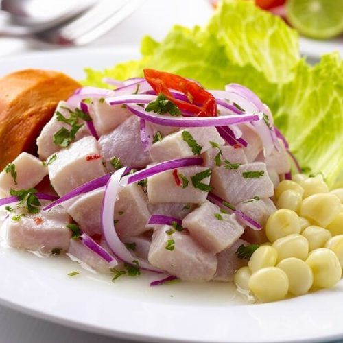
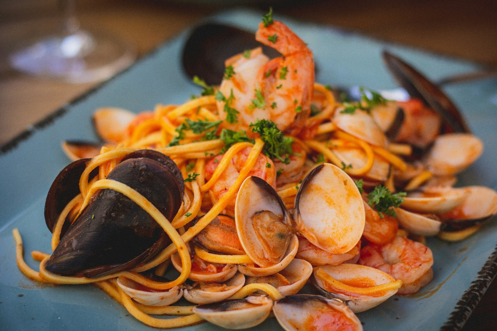
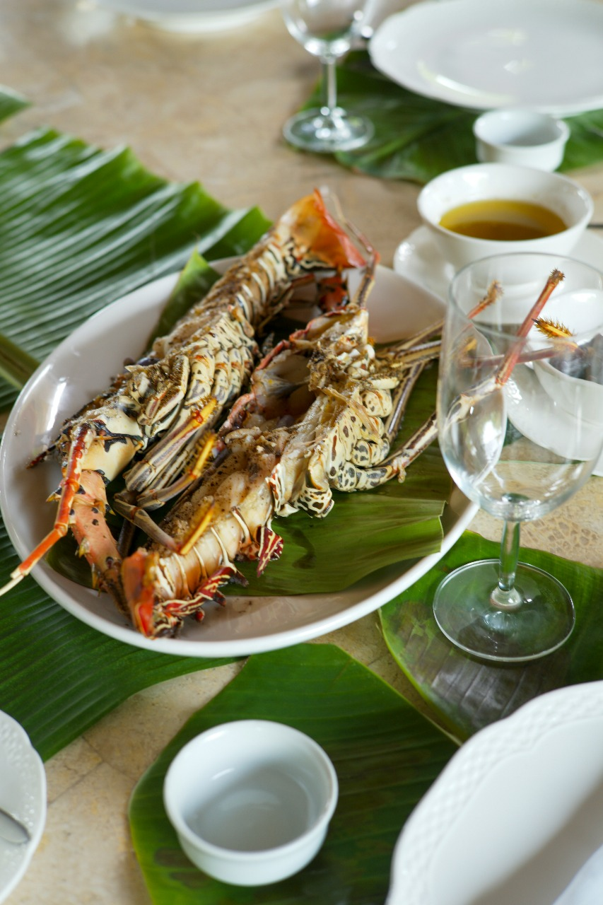
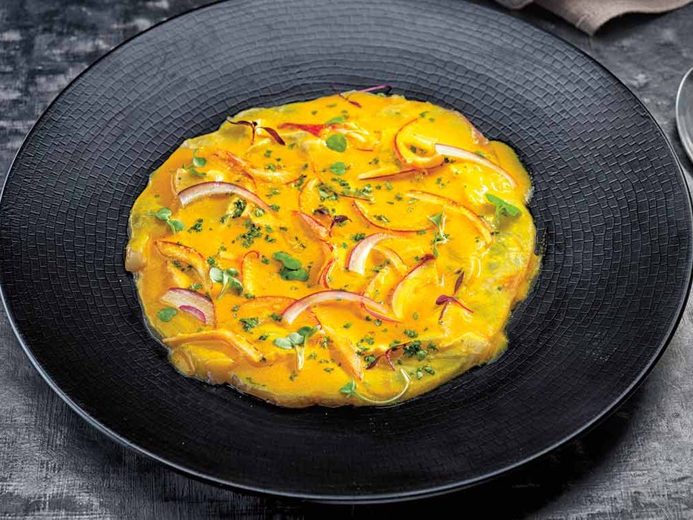
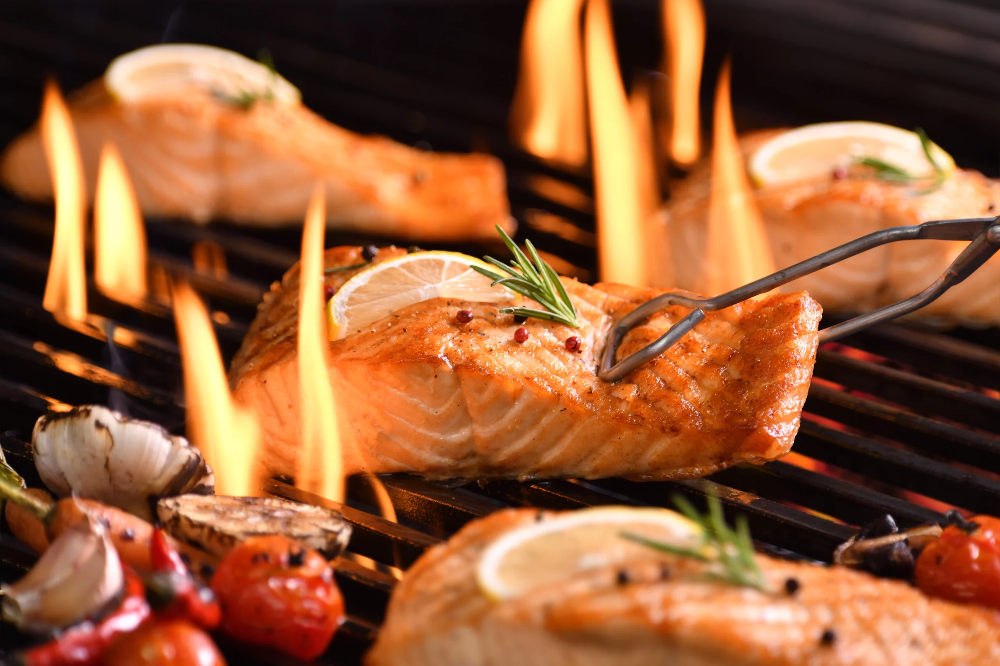
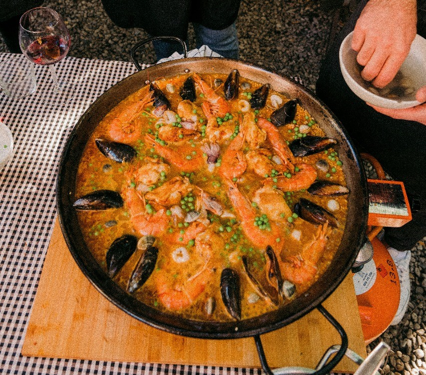
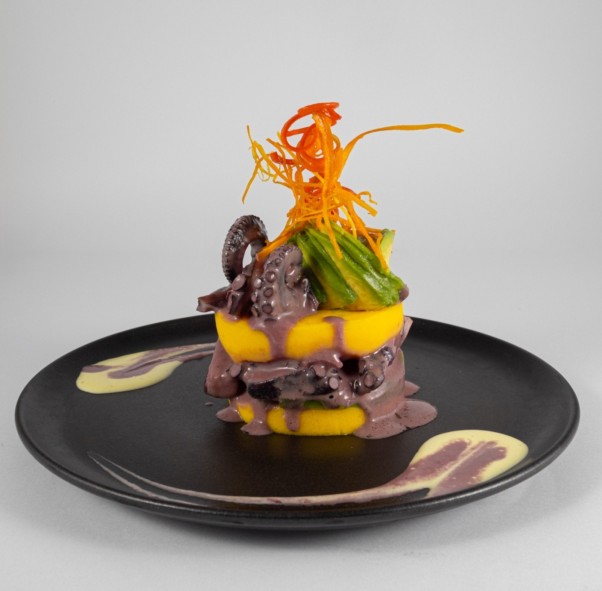

Nosotros
- 
- 
- 
- 
- 

¿Quienes somos?
El Tridente abrió sus puertas en abril de 2010 con la misión de ofrecer cocina marina de alta calidad, con un ambiente cálido y acogedor. En Pecados, cada plato busca crear recuerdos inolvidables, brindando así el ambiente ideal para disfrutar con amigos y familia. Nuestra propuesta culinaria se basa en el concepto “fusión-nikkei”, donde las técnicas culinarias y el sabor son los protagonistas, fusionando la cocina peruana con la japonesa logramos que lo imposible sea posible para satisfacer las expectativas de nuestra clientela.
Mision
Ofrecer una experiencia culinaria inolvidable basada en la frescura del mar, combinando técnicas modernas con productos locales, en un ambiente cálido y acogedor.
- 
Vision
Ser reconocido como el restaurante líder en gastronomía marina a nivel nacional, gracias a la excelencia de nuestro servicio, la originalidad de nuestras propuestas y la satisfacción que generamos en quienes prueban nuestros platos.
Historia
- 